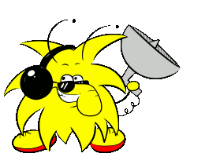

Nur ein geringer Anteil unserer Bachelorstudierenden schließt das Studium innerhalb der Regelstudienzeit ab. Das ist zunächst einmal interessant.
Fragt man nach den Ursachen hierfür, stellt sich heraus, dass viele meinen, zu wissen, woran das liegt, aber verlässliche Zahlen sucht man vergebens.
Wir als Fachschaft finden, dass es an der Zeit ist, zumindest das zu ändern. Deshalb bitten wir euch, durch die Beantwortung von maximal 7 Fragen eine Datenbasis zu schaffen, aus der im besten Fall eine Verbesserung der Studiensituation resultiert – versprechen können wir aber natürlich nichts. Vielleicht ist ja auch alles töfte?
Falls ihr vorhabt, in Regelstudienzeit fertig zu werden oder es bereits wurdet, nehmt bitte ebenfalls teil. Auch eure Studienverläufe sind interessant!
Obacht! Alle Angaben sind anonym und freiwillig.
Diese Befragung wird durch die Fachschaft Informatik der Rheinischen Friedrich-Wilhelms-Universität Bonn durchgeführt. Die erhobenen Daten werden lediglich in Form von Auswertungen an Dritte weitergegeben oder veröffentlicht.

Es freut uns, dass du uns auf unserer Mission unterstützen willst. Leider passt dein Studienverlauf nicht in unsere Befragung.
Falls du uns unabhängig davon etwas mitteilen möchtest, kannst du das natürlich gerne tun!
Kontaktmöglichkeiten? Auf unserer Hauptseite links in der Sidebar!
Noch nicht Informatik studiert? Schreib dich zum Wintersemester ein!
Der Server sagt:
Es freut uns, dass du uns bei unserer Mission unterstützt.
Falls du uns unabhängig davon etwas mitteilen möchtest, kannst du das naürlich gerne tun!
Kontaktmöglichkeiten? Auf unserer Hauptseite links in der Sidebar!